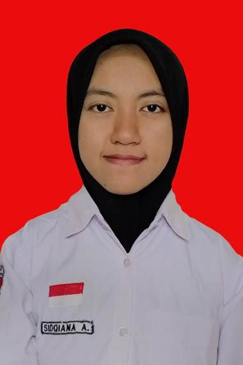

|
 |
SIDQIANA AZZAHRA |
| Mahasiswa Teknik Informatika UNESA | |
| 0821-4263-5182 | |
| @sidqianaazzahra | |
|
https://github.com/azzahra207
https://www.linkedin.com/in/sidqiana-azzahra-305618307/ https://azzahra207.github.io/Portofolio/ |
Sidqiana Azzahra, mahasiswa S1 jurusan Teknik Informatika di Universitas Negeri Surabaya. Lahir di Probolinggo, 22 Juli 2007. Memiliki ketertarikan di bidang pemrograman, khususnya web developer. Pengalaman menciptakan produk digital, baik secara tim maupun individu dapat dipertimbangkan dalam penilaian. Saat ini, sedang mempelajari bahasa C++, python, PHP, javascript, dan MySQL.
2025 - Sekarang
2022 - 2025
2026 - Sekarang
2026 - Sekarang
2026 - Sekarang
2026 - Sekarang
2026 - Sekarang
2026
2026
2026
2025 - Sekarang
2025
2024 - 2025
2025 - sekarang
2023 - 2024